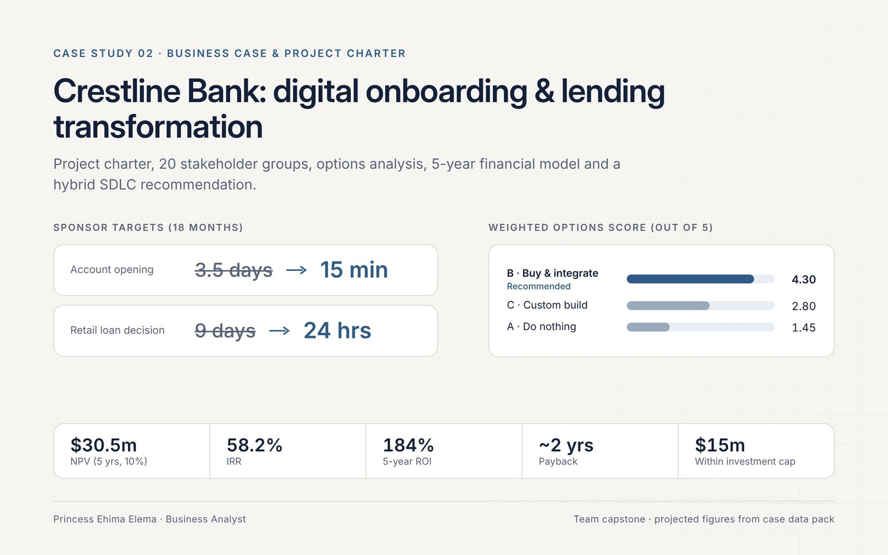

Crestline Bank: Digital Onboarding & Lending Transformation
A mid-tier bank’s manual onboarding and lending were slowing growth and creating compliance risk across three countries. Our Business Analyst team built the charter, stakeholder analysis, options comparison, 5-year business case and delivery recommendation.

Business problem
Manual processes were capping growth and creating risk
Crestline Bank, a mid-tier commercial bank with 210 branches across the United States, Canada and Mexico, relied on paper forms, manual identity and sanctions checks, spreadsheet loan scoring and re-keying across disconnected systems. Each country ran its own process.
3.5 daysAverage time to open an account38%Abandon digital onboarding9 daysTo approve a retail loan17%Files with missing KYC or documents$65Manual cost per application3Countries, each with different rulesThis exposed the bank to regulatory findings, fraud and customer losses to faster fintech competitors.
Objective
Meet the Sponsor’s 18-month targets
Measure Baseline Target Account opening time 3.5 days 15 minutes (digital) Retail loan decision 9 days Within 24 hours Digital onboarding abandonment 38% Below 15% Files missing KYC or documents 17% Below 3% Total investment – Within $15m cap US Midwest pilot – Live before the annual regulatory exam Approach
Initiate, analyse, compare, justify
Working in a Business Analyst team, we treated this as a full project initiation:
- Mapped the current onboarding process and analysed each problem’s evidence, impact and root cause.
- Wrote the project charter: SMART objectives, scope in and out, 12 deliverables, assumptions, constraints, success criteria, governance, stage gates and an 18-month milestone plan.
- Identified and rated 20 stakeholder groups on power, interest, influence and attitude.
- Compared three solution options against seven weighted criteria.
- Built a 5-year financial model with NPV, IRR, ROI, payback and sensitivity analysis, plus a scored risk register.
- Recommended an SDLC approach that works within the regulatory constraints.
Analysis
One root cause behind six problems
A 5 Whys analysis showed the six problems were symptoms of one structural cause:
- Onboarding takes 3.5 days because documents are verified by hand after the customer leaves.
- They are verified by hand because identity and sanctions checks run through separate, unconnected portals.
- The portals are not connected because core banking, the loan system, CRM and spreadsheets were never integrated.
- They were never integrated because the core cannot be replaced and no workflow layer sits on top of it.
- There is no workflow layer because the bank has not yet invested in a digital onboarding and lending platform.
Stakeholder analysis covered 20 groups, including regulators in all three countries, identity and sanctions providers and technology vendors. For a stakeholder base of 200+ (210 branches, 6,500 staff and 4.2 million customers), we proposed a tiered model: named owners for about 10–15 decision makers, representative groups with workshops, and champions and segmented communications in English, French and Spanish for everyone else.
Findings
Buy and integrate was the clear winner
Option Weighted score (out of 5) Investment NPV at 10% Pilot before exam B. Buy a platform & integrate 4.30 $15.0m $30.5m Yes (about month 9) C. Custom build 2.80 $24.0m $1.9m No (about month 24) A. Do nothing 1.45 – $0.0m No $30.5mNPV over 5 years at 10%58.2%IRR184%5-year ROI~2 yrsPayback (1.97 years)2.31xBenefit-cost ratio56.6%Benefits could fall before NPV hits zeroCustom build would cost about 60% more, deliver far less value and miss the regulatory exam window. Doing nothing is not neutral: onboarding stays slow, 17% of files stay incomplete going into the exam, and customers keep leaving.
Recommendations
Option B, delivered through a hybrid SDLC
- Approve Option B: buy a digital onboarding and lending-workflow platform and integrate it with the existing core banking platform.
- Deliver through a Hybrid SDLC: Waterfall-style initiation, design, compliance and testing gates wrapped around Agile (Scrum) sprints for build and configuration.
- Launch a US Midwest pilot around month 9, before the regulatory exam, then roll out to the rest of the US, Canada (English and French) and Mexico (Spanish).
- Name a product owner and country compliance leads, and track benefits through a KPI dashboard.
Why hybrid: pure Waterfall is too slow for an 18-month target and a 38% drop-off problem, while pure Agile cannot give regulators the documented requirements, sign-offs and audit trail banking demands.Outcome
A Sponsor-ready charter and business case
A full project charter and business case for Sponsor approval, supported by an Excel workbook containing the financial model, sensitivity analysis, options matrix, stakeholder register, power-interest grid, RACI covering 15 key activities, communication plan and risk register.
Business impact
Projected value
This was a training capstone, so there is no measured real-world impact. The figures below are projections from the case data pack.The recommended option was projected to deliver an NPV of $30.5m over 5 years, a 184% ROI and payback in about 2 years, while meeting the Sponsor’s targets for onboarding speed, loan decisions, drop-off, file completeness and the $15m investment cap.